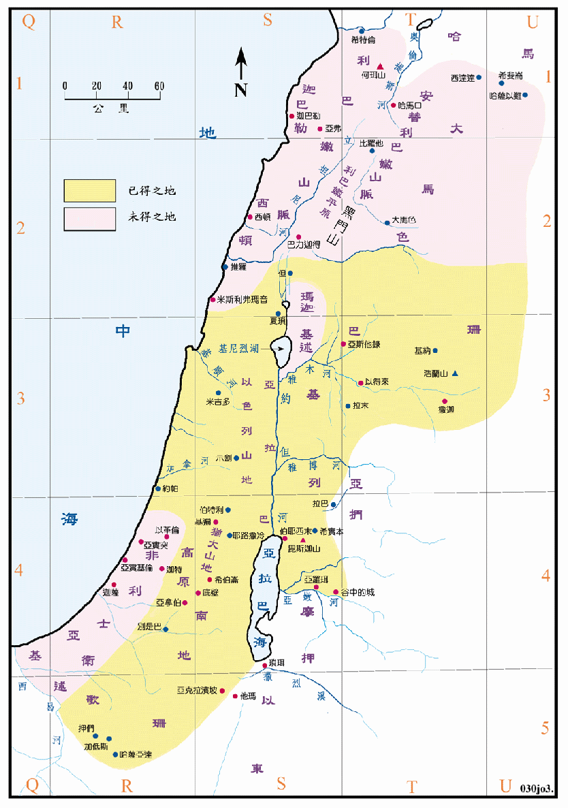

1406～1360BC

| 圣经 | 说明 |
|---|---|
| 书11:16-23，12:7-8 | 约书亚夺了那全地，在约但河西计有山地、一带南地、歌珊全地、高原、亚拉巴、以色列山地和山下的高原、从上西珥的哈拉山、直到黑门山下利巴嫩平原的巴力迦得。 |
| 书12:1-6 | 约书亚在约但河东击杀亚摩利人的两个王，得了他们的地，就是从亚嫩谷直到黑门山，并东边的全亚拉巴之地，直到基述人和玛迦人的境界。 |
| 书13:1-7 | 未得之地计有：非利士人全境、西顿人的米亚拉到亚弗、迦巴勒人之地、全利巴嫩等。 |
未得之地是以应许地为目标而尚未能取得者，可与民卅四章及<民图02>作一比较，因此未取得之地尚有很大的面积。在最初两次的分地时，六个支派所得之地都相当的大，但第三次分地时，七个支派所得的面积都很小，而且有几个支派的地业是从原已分得其他支派的地业中取出的，足见所得之地实不够分配，如果能取得所有的应许地，情形就会大不一样了。